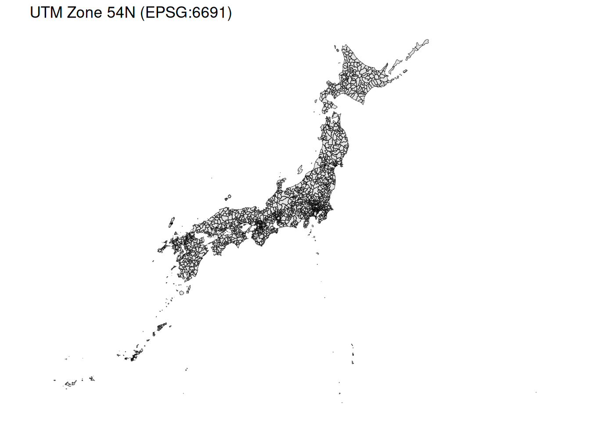
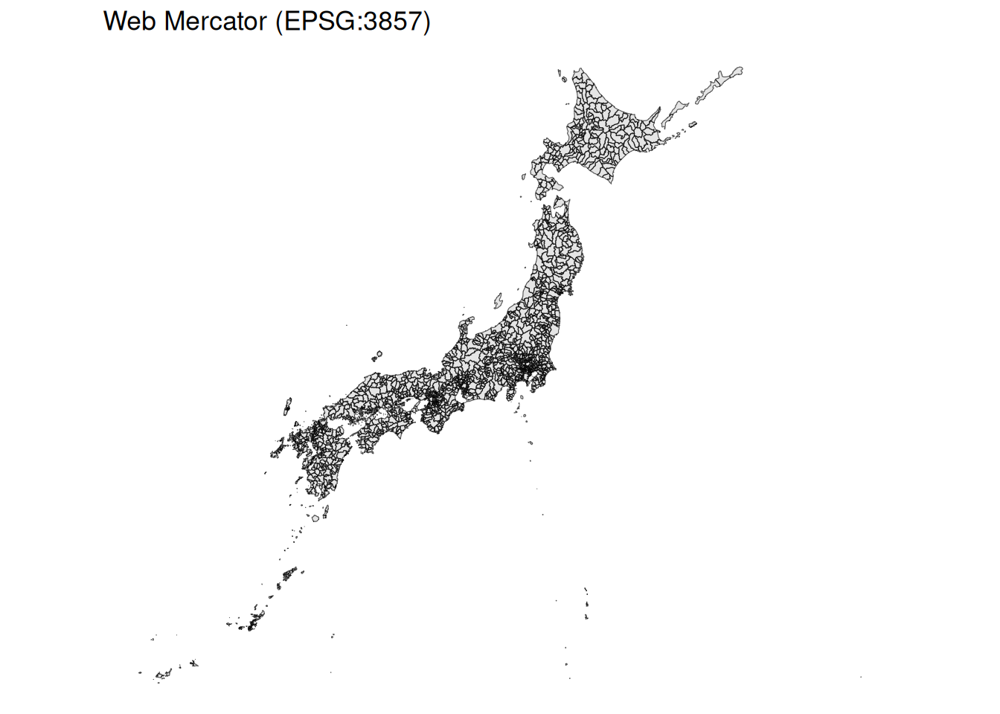

library(tidyverse)
library(sf)
library(here)
# 日本全国の市町村データの読み込み
jp_muni <- read_sf(here("data/jpn_geojson/jp_muni_simplified.gpkg"))はじめに
今回はGISにおいて重要な概念である座標参照系（Coordinate Reference System：CRS）について説明します。
CRSは地理データを扱う上で非常に重要な概念です。適切なCRSを設定しないと、地図の見た目がおかしくなったり、距離や面積の計算結果が不正確になったりします。
本ページでは、CRSとは何か、どのように地図の見た目に影響するか、そして計算結果にどのような違いが生じるかを、実例を交えて説明します。
使用するパッケージ・データ
今回は日本全国の市町村データを使用します1。
CRSとは
基本概念
CRS（座標参照系）とは、地球上の位置を数値で表現するためのルールのことです。
座標というものは数学のグラフなどと同様に原点を基準としてある点を表すもので、座標参照系によってその座標の考え方が異なるというイメージを持っていただければと思います。
地球は球体ですが、地図は平面です。球体を平面に変換するには何らかの方法が必要で、その変換方法を定めたものがCRSです。
Note地図と同じ
メルカトル図法やモルワイデ図法、正距方位図法など様々な地図を社会で学んだと思いますが、それと同じで、何を優先するのかによって使うCRSが変わります。
CRSの種類
CRSは大きく分けて2種類あります。
- 地理座標系（Geographic CRS）
- 緯度（Latitude）と経度（Longitude）で位置を表現
- 単位は「度」
- 球体上の座標
- 例：JGD2011（EPSG:6668）、WGS84（EPSG:4326）
- 投影座標系（Projected CRS）
- 平面上のX座標とY座標で位置を表現
- 単位は「メートル」などの距離単位
- 地理座標系を平面に投影したもの
- 例：UTM座標系、平面直角座標系
CRSの確認
データのCRSはst_crs()関数で確認できます。
st_crs(jp_muni)Coordinate Reference System:
User input: JGD2011
wkt:
GEOGCRS["JGD2011",
DATUM["Japanese Geodetic Datum 2011",
ELLIPSOID["GRS 1980",6378137,298.257222101,
LENGTHUNIT["metre",1]]],
PRIMEM["Greenwich",0,
ANGLEUNIT["degree",0.0174532925199433]],
CS[ellipsoidal,2],
AXIS["geodetic latitude (Lat)",north,
ORDER[1],
ANGLEUNIT["degree",0.0174532925199433]],
AXIS["geodetic longitude (Lon)",east,
ORDER[2],
ANGLEUNIT["degree",0.0174532925199433]],
USAGE[
SCOPE["Horizontal component of 3D system."],
AREA["Japan - onshore and offshore."],
BBOX[17.09,122.38,46.05,157.65]],
ID["EPSG",6668]]この出力から、以下のことがわかります。
- ID[“EPSG”,6668]：EPSG番号が6668
- “JGD2011”：日本測地系20112を使用
- AXIS[“geodetic latitude (Lat)”：緯度経度を使用する地理座標系
NoteEPSG番号について
EPSG番号は、CRSを識別するための国際的な番号です。例えば、
4326：WGS84（GPSで使われる世界測地系）6668：JGD2011（日本測地系2011、緯度経度）6677：JGD2011 / 平面直角座標系 第9系6691：JGD2011 / UTM座標系 Zone 54N
EPSG番号を指定すれば、世界中どこでも同じCRSを参照できます。
CRSが地図の見た目に与える影響
それでは実際に、異なるCRSで同じデータをプロットして、見た目の違いを確認してみましょう。
地理座標系（JGD2011）でのプロット
まずは現在のCRS（JGD2011、緯度経度）でプロットします。
ggplot() +
geom_sf(data = jp_muni) +
ggtitle("JGD2011 (EPSG:6668)") +
theme_void()
投影座標系（UTM）でのプロット
次に、UTM座標系（Universal Transverse Mercator）に変換してプロットします。東日本の大部分はUTM Zone 54Nに位置しています。
CRSを変換するには、st_transform()関数を使います。
jp_muni_utm <- jp_muni |>
st_transform(st_crs(6691)) # UTM Zone 54N
ggplot() +
geom_sf(data = jp_muni_utm) +
ggtitle("UTM Zone 54N (EPSG:6691)") +
theme_void()

Webメルカトル図法でのプロット
Web地図（Google Maps等）でよく使われるWebメルカトル図法でもプロットしてみます。
jp_muni_webmercator <- jp_muni |>
st_transform(st_crs(3857)) # Webメルカトル図法
ggplot() +
geom_sf(data = jp_muni_webmercator) +
ggtitle("Web Mercator (EPSG:3857)") +
theme_void()

平面直角座標系でのプロット
日本独自の座標系である平面直角座標系も試してみましょう。ここでは第9系を例に示します3。
jp_muni_jpr <- jp_muni |>
st_transform(st_crs(6677)) # 平面直角座標系 第9系
ggplot() +
geom_sf(data = jp_muni_jpr) +
ggtitle("平面直角座標系 第9系 (EPSG:6677)") +
theme_void()
Importantプロットの見た目の違い
同じデータでも、CRSによって地図の形が微妙に異なることが確認できます。
- 地理座標系（緯度経度）では、緯線と経線が直交するように見えます
- 投影座標系では、地球の丸みを考慮した平面投影が行われます
- 投影方法によって、どの部分が正確に保たれるか（距離、面積、角度など）が異なります
このことを確認するために、パネル表示で比較してみましょう。
ggplot() +
geom_sf(data = jp_muni) +
ggtitle("JGD2011 (EPSG:6668)") +
theme_void()
ggplot() +
geom_sf(data = jp_muni_utm) +
ggtitle("UTM Zone 54N (EPSG:6691)") +
theme_void()
ggplot() +
geom_sf(data = jp_muni_webmercator) +
ggtitle("Web Mercator (EPSG:3857)") +
theme_void()
ggplot() +
geom_sf(data = jp_muni_jpr) +
ggtitle("平面直角座標系 第9系 (EPSG:6677)") +
theme_void()
CRSが計算結果に与える影響
CRSの選択は、距離や面積の計算結果にも大きく影響します。
面積の計算
日本全国の面積を、異なるCRSで計算してみます。
st_area()関数を使って面積を計算します。
NoteGPKGファイルのジオメトリ情報
通常、シェープファイルやGeoJSONファイルを読み込むと、ジオメトリ情報はgeometry列に格納されますが、GPKGファイルの場合はgeom列に格納されます。
今回は軽量化のためにGPKGファイルを使っているのでgeom列を使用していますが、他の形式を使う場合はgeometry列を使用してください。
# 日本全国を1つのポリゴンに集約
jp_union <- jp_muni |>
summarise(geom = st_union(geom))
# JGD2011（地理座標系）での面積
area_jgd2011 <- jp_union |>
st_area() |>
units::set_units(km^2) |>
as.numeric()
# UTM座標系での面積
area_utm <- jp_union |>
st_transform(st_crs(6691)) |>
st_area() |>
units::set_units(km^2) |>
as.numeric()
# 平面直角座標系での面積（参考：第9系）
area_jpr <- jp_union |>
st_transform(st_crs(6677)) |>
st_area() |>
units::set_units(km^2) |>
as.numeric()tibble(
CRS = c("JGD2011 (緯度経度)", "UTM Zone 54N", "平面直角座標系 第9系"),
面積_km2 = c(area_jgd2011, area_utm, area_jpr)
) |>
mutate(差異_パーセント = (面積_km2 / area_utm - 1) * 100)| CRS | 面積_km2 | 差異_パーセント |
|---|---|---|
| JGD2011 (緯度経度) | 377720.7 | -0.55748897 |
| UTM Zone 54N | 379838.3 | 0.00000000 |
| 平面直角座標系 第9系 | 379563.8 | -0.07226048 |
面積が異なっているのが確認いただけるかと思います。
Important面積計算の注意点
- 地理座標系（緯度経度）で直接計算すると、結果が不正確になります
- 投影座標系（メートル単位）で計算するのが正確です
sfパッケージのst_area()は、地理座標系の場合でも地球の曲率を考慮して計算しますが、投影座標系を使う方がより正確です
距離の計算
東京都と大阪府の中心点間の距離を計算してみます。
# 東京都と大阪府を抽出
tokyo <- jp_muni |>
filter(id_pref == "13") |>
st_union() |>
st_centroid()
osaka <- jp_muni |>
filter(id_pref == "27") |>
st_union() |>
st_centroid()
# JGD2011（地理座標系）での距離
distance_jgd2011 <- st_distance(tokyo, osaka) |>
units::set_units(km) |>
as.numeric()
# UTM座標系での距離
distance_utm <- st_distance(
tokyo |> st_transform(6691),
osaka |> st_transform(6691)
) |>
units::set_units(km) |>
as.numeric()
# 結果の比較
tibble(
CRS = c("JGD2011 (緯度経度)", "UTM Zone 54N"),
距離_km = c(distance_jgd2011, distance_utm),
差異_m = (距離_km - distance_utm) * 1000
)# A tibble: 2 × 3
CRS 距離_km 差異_m
<chr> <dbl> <dbl>
1 JGD2011 (緯度経度) 376. -1178.
2 UTM Zone 54N 377. 0
Note距離計算の推奨
- 小さな範囲での計算であれば、CRSによる差は小さい
- 広域での計算や高精度が必要な場合は、投影座標系を使用する
st_distance()もst_area()と同様に、地理座標系の場合は地球の曲率を考慮して計算します
CRSの変換
基本的な変換方法
CRSの変換にはst_transform()関数を使います。
EPSG番号を用いて変換することはもちろん、他のデータのCRSを参照して変換することも可能です。
# EPSG番号を指定して変換
data_transformed <- data |>
st_transform(st_crs(6691)) # UTM Zone 54Nに変換
# 他のデータのCRSに合わせる
data_transformed <- data |>
st_transform(st_crs(other_data)) # other_dataのCRSに変換CRSを設定する場合
データにCRSが設定されていない場合は、st_set_crs()で設定します。
# CRSが未設定のデータにCRSを設定
data_with_crs <- data |>
st_set_crs(st_crs(6668)) # JGD2011を設定
Warningst_transform() と st_set_crs() の違い
st_transform()：座標値を変換する（投影変換）st_set_crs()：CRS情報を付与・上書きする（座標値は変わらない）
間違ったCRSをst_set_crs()で設定すると、位置がずれてしまうので注意してください。設定に当たっては元データの仕様をよく確認し、正しいCRSを設定してください。
導入 + ハンドリングで行った公園データの処理を思い出してください。
日本でよく使われるCRS
日本国内でGISを扱う際によく使われるCRSをまとめます。
| CRS名 | EPSG番号 | 種類 | 用途 |
|---|---|---|---|
| JGD2011（緯度経度） | 6668 | 地理座標系 | 汎用的な地図表示 |
| JGD2000（緯度経度） | 4612 | 地理座標系 | 古いデータで使用 |
| WGS84 | 4326 | 地理座標系 | GPS、国際的な利用 |
| UTM Zone 54N | 6691 | 投影座標系 | おおよそ東日本と北海道の西半分（東経138度～144度） |
| UTM Zone 55N | 6692 | 投影座標系 | おおよそ北海道の東半分（東経144度～150度） |
| 平面直角座標系 第1系 | 6669 | 投影座標系 | 長崎県・鹿児島県の一部 |
| 平面直角座標系 第9系 | 6677 | 投影座標系 | 東京都の一部・福島県・栃木県・茨城県・埼玉県・千葉県・群馬県・神奈川県 |
| Webメルカトル | 3857 | 投影座標系 | Web地図（Google Maps等） |
TipCRSの選び方
- 可視化のみ：JGD2011（EPSG:6668）で問題なし
- 距離・面積計算：投影座標系（UTMや平面直角座標系）を使用
- Web地図との連携：Webメルカトル（EPSG:3857）に変換
- 複数データの統合：すべて同じCRSに揃える
実践例：異なるCRSのデータを重ね合わせる
異なるCRSを持つ2つのデータを重ね合わせてプロットする際の注意点を確認します。
# データ1はJGD2011、データ2はWGS84だとする
data1_jgd2011 <- read_sf("data1.shp") # CRS: 6668
data2_wgs84 <- read_sf("data2.shp") # CRS: 4326
# CRSが異なる場合は、片方に合わせる
data2_transformed <- data2_wgs84 |>
st_transform(st_crs(data1_jgd2011))
# これで正しく重ね合わせができる
ggplot() +
geom_sf(data = data1_jgd2011) +
geom_sf(data = data2_transformed, color = "red") +
theme_void()
ImportantCRSを揃える重要性
異なるCRSのデータを変換せずに重ね合わせると、位置がずれてしまいます。
必ずCRSを確認し、統一してから作業を進めてください。
おわりに
今回はCRS（座標参照系）について説明しました。
CRSは地理データを扱う上で最も基本的かつ重要な概念です。適切なCRSを選択し、必要に応じて変換することで、正確な地図表示と計算が可能になります。
ポイントのまとめ：
- CRSには地理座標系（緯度経度）と投影座標系（メートル等）がある
- CRSによって地図の見た目が変わる
- 距離・面積の計算では投影座標系を使うのが正確
- 複数のデータを扱う際は、CRSを統一する
st_transform()で変換、st_set_crs()で設定- データを読み込んだら、まず
st_crs()でCRSを確認する習慣をつける
次回以降も、このCRSの知識を活用しながらGISを扱っていきます。
おまけ
今回は座標参照系の概念を中心に説明しましたが、各CRSの詳細な特徴や適用範囲については、以下の書籍がおすすめです。